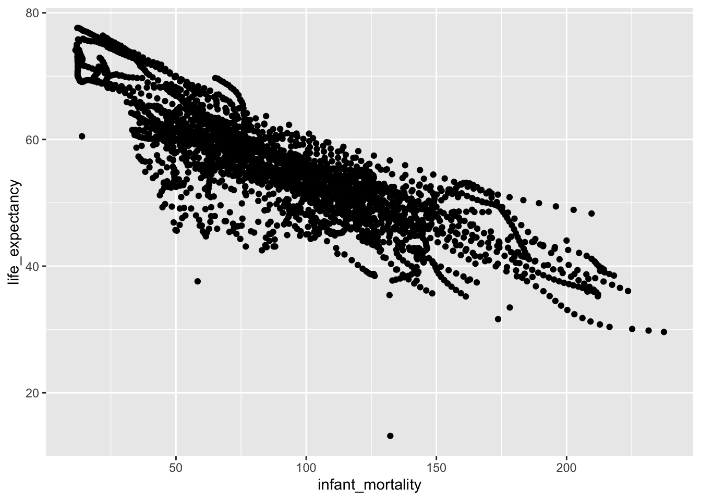
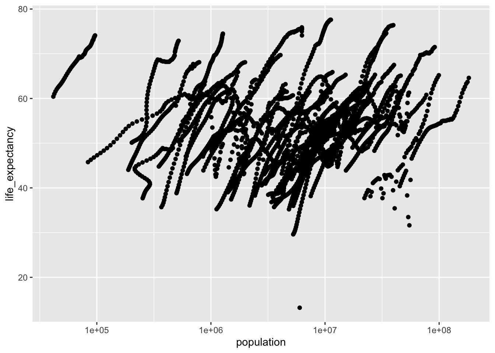
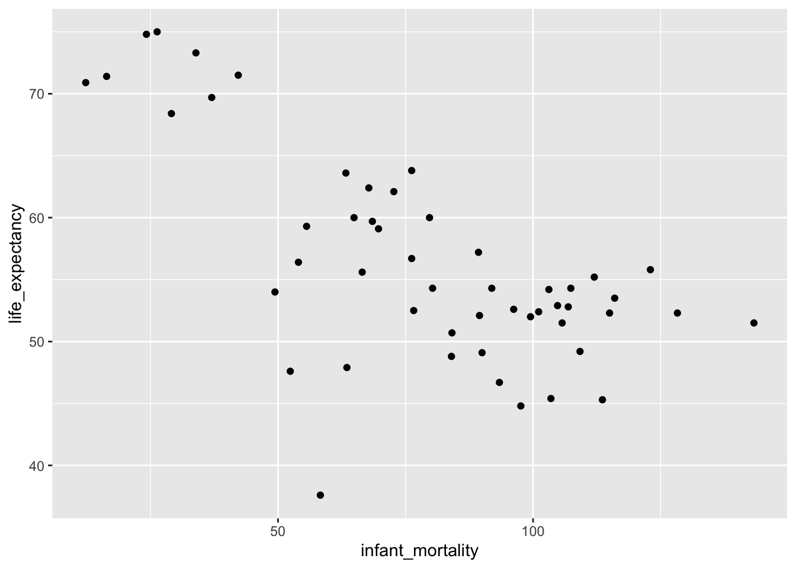
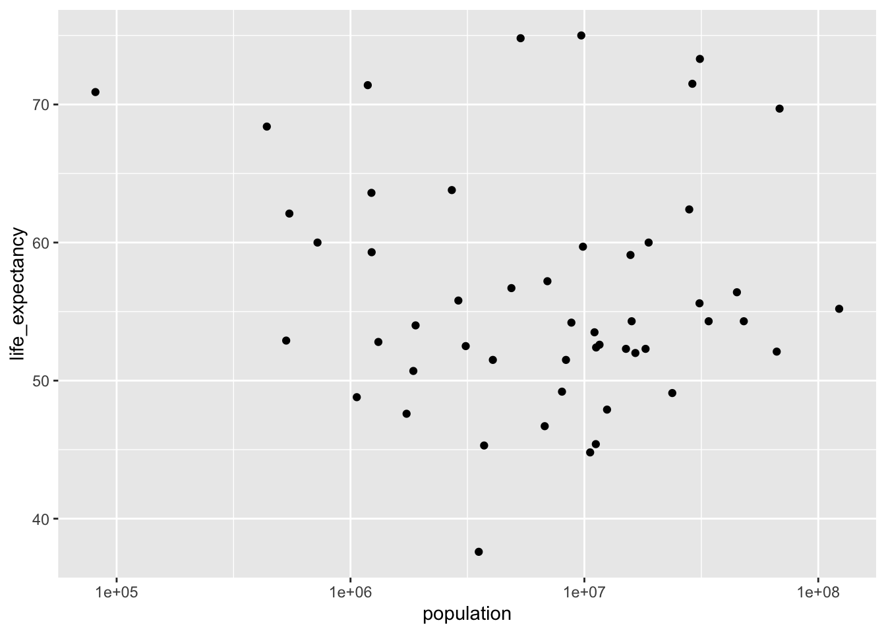
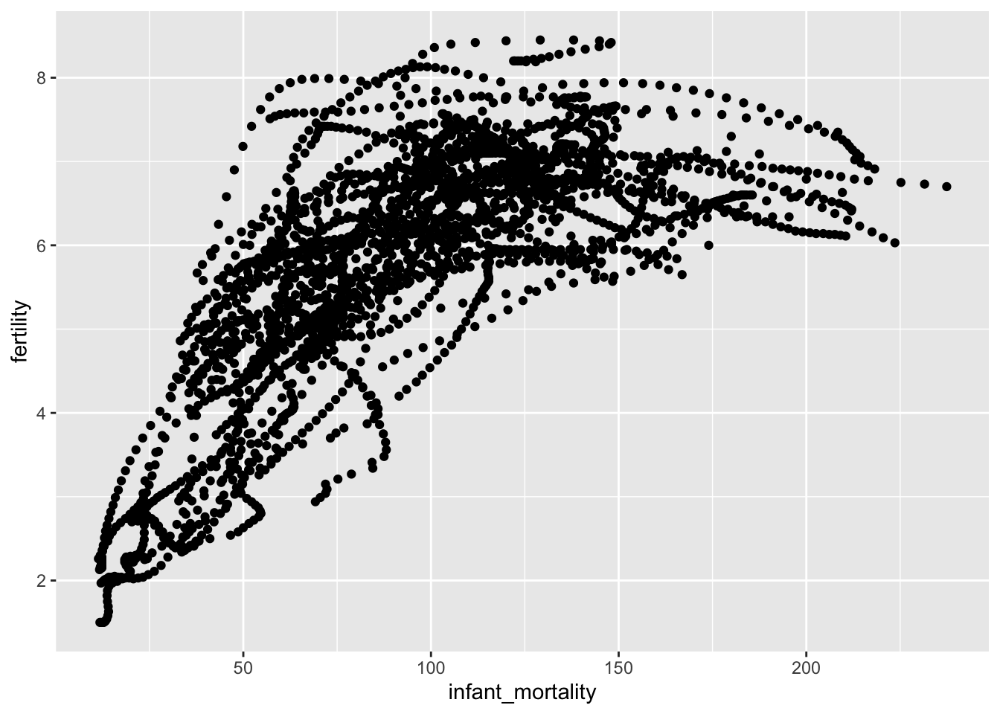
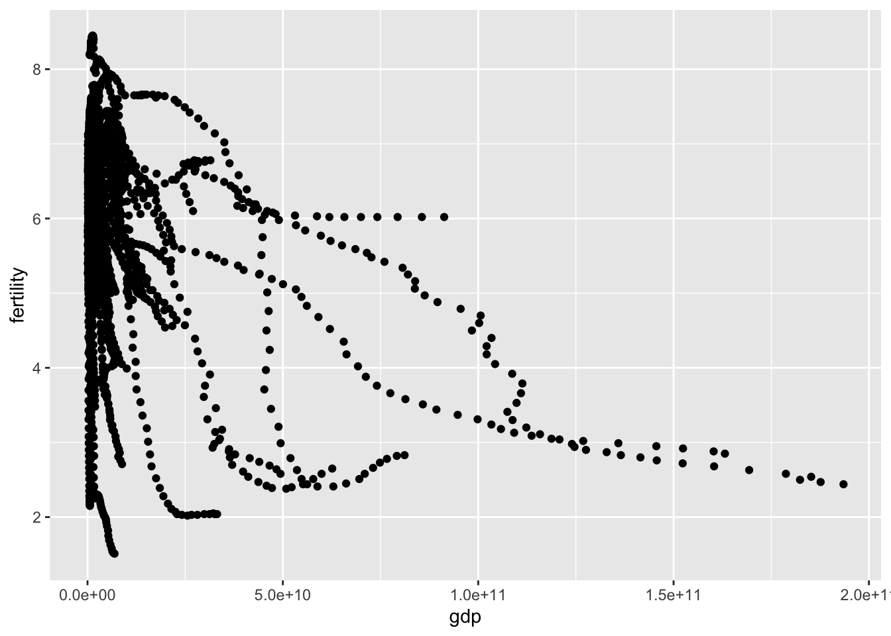

#Load packages, view data
## ── Attaching packages ─────────────────────────────────────── tidyverse 1.3.0 ──## ✓ ggplot2 3.3.5 ✓ purrr 0.3.4
## ✓ tibble 3.0.4 ✓ dplyr 1.0.2
## ✓ tidyr 1.1.2 ✓ stringr 1.4.0
## ✓ readr 1.4.0 ✓ forcats 0.5.0## ── Conflicts ────────────────────────────────────────── tidyverse_conflicts() ──
## x dplyr::filter() masks stats::filter()
## x dplyr::lag() masks stats::lag()library("broom")
#look at gapminder help file
help(gapminder)
#get data structure overview
str(gapminder)## 'data.frame': 10545 obs. of 9 variables:
## $ country : Factor w/ 185 levels "Albania","Algeria",..: 1 2 3 4 5 6 7 8 9 10 ...
## $ year : int 1960 1960 1960 1960 1960 1960 1960 1960 1960 1960 ...
## $ infant_mortality: num 115.4 148.2 208 NA 59.9 ...
## $ life_expectancy : num 62.9 47.5 36 63 65.4 ...
## $ fertility : num 6.19 7.65 7.32 4.43 3.11 4.55 4.82 3.45 2.7 5.57 ...
## $ population : num 1636054 11124892 5270844 54681 20619075 ...
## $ gdp : num NA 1.38e+10 NA NA 1.08e+11 ...
## $ continent : Factor w/ 5 levels "Africa","Americas",..: 4 1 1 2 2 3 2 5 4 3 ...
## $ region : Factor w/ 22 levels "Australia and New Zealand",..: 19 11 10 2 15 21 2 1 22 21 ...## country year infant_mortality life_expectancy
## Albania : 57 Min. :1960 Min. : 1.50 Min. :13.20
## Algeria : 57 1st Qu.:1974 1st Qu.: 16.00 1st Qu.:57.50
## Angola : 57 Median :1988 Median : 41.50 Median :67.54
## Antigua and Barbuda: 57 Mean :1988 Mean : 55.31 Mean :64.81
## Argentina : 57 3rd Qu.:2002 3rd Qu.: 85.10 3rd Qu.:73.00
## Armenia : 57 Max. :2016 Max. :276.90 Max. :83.90
## (Other) :10203 NA's :1453
## fertility population gdp continent
## Min. :0.840 Min. :3.124e+04 Min. :4.040e+07 Africa :2907
## 1st Qu.:2.200 1st Qu.:1.333e+06 1st Qu.:1.846e+09 Americas:2052
## Median :3.750 Median :5.009e+06 Median :7.794e+09 Asia :2679
## Mean :4.084 Mean :2.701e+07 Mean :1.480e+11 Europe :2223
## 3rd Qu.:6.000 3rd Qu.:1.523e+07 3rd Qu.:5.540e+10 Oceania : 684
## Max. :9.220 Max. :1.376e+09 Max. :1.174e+13
## NA's :187 NA's :185 NA's :2972
## region
## Western Asia :1026
## Eastern Africa : 912
## Western Africa : 912
## Caribbean : 741
## South America : 684
## Southern Europe: 684
## (Other) :5586## [1] "data.frame"#Create new objects as subset of original dataset
#Assign African countries to new object
africadata <- gapminder %>% filter(continent=="Africa")
#get data structure overview for africadata
str(africadata)## 'data.frame': 2907 obs. of 9 variables:
## $ country : Factor w/ 185 levels "Albania","Algeria",..: 2 3 18 22 26 27 29 31 32 33 ...
## $ year : int 1960 1960 1960 1960 1960 1960 1960 1960 1960 1960 ...
## $ infant_mortality: num 148 208 187 116 161 ...
## $ life_expectancy : num 47.5 36 38.3 50.3 35.2 ...
## $ fertility : num 7.65 7.32 6.28 6.62 6.29 6.95 5.65 6.89 5.84 6.25 ...
## $ population : num 11124892 5270844 2431620 524029 4829291 ...
## $ gdp : num 1.38e+10 NA 6.22e+08 1.24e+08 5.97e+08 ...
## $ continent : Factor w/ 5 levels "Africa","Americas",..: 1 1 1 1 1 1 1 1 1 1 ...
## $ region : Factor w/ 22 levels "Australia and New Zealand",..: 11 10 20 17 20 5 10 20 10 10 ...## country year infant_mortality life_expectancy
## Algeria : 57 Min. :1960 Min. : 11.40 Min. :13.20
## Angola : 57 1st Qu.:1974 1st Qu.: 62.20 1st Qu.:48.23
## Benin : 57 Median :1988 Median : 93.40 Median :53.98
## Botswana : 57 Mean :1988 Mean : 95.12 Mean :54.38
## Burkina Faso: 57 3rd Qu.:2002 3rd Qu.:124.70 3rd Qu.:60.10
## Burundi : 57 Max. :2016 Max. :237.40 Max. :77.60
## (Other) :2565 NA's :226
## fertility population gdp continent
## Min. :1.500 Min. : 41538 Min. :4.659e+07 Africa :2907
## 1st Qu.:5.160 1st Qu.: 1605232 1st Qu.:8.373e+08 Americas: 0
## Median :6.160 Median : 5570982 Median :2.448e+09 Asia : 0
## Mean :5.851 Mean : 12235961 Mean :9.346e+09 Europe : 0
## 3rd Qu.:6.860 3rd Qu.: 13888152 3rd Qu.:6.552e+09 Oceania : 0
## Max. :8.450 Max. :182201962 Max. :1.935e+11
## NA's :51 NA's :51 NA's :637
## region
## Eastern Africa :912
## Western Africa :912
## Middle Africa :456
## Northern Africa :342
## Southern Africa :285
## Australia and New Zealand: 0
## (Other) : 0#make new variable containing infant_mortality and life_expectancy
mort_life <- africadata %>% select(infant_mortality, life_expectancy)
#make new variable containing population and life_expectancy
pop_life <- africadata %>% select(population, life_expectancy)
#view data structure for new variables
str(mort_life)## 'data.frame': 2907 obs. of 2 variables:
## $ infant_mortality: num 148 208 187 116 161 ...
## $ life_expectancy : num 47.5 36 38.3 50.3 35.2 ...## 'data.frame': 2907 obs. of 2 variables:
## $ population : num 11124892 5270844 2431620 524029 4829291 ...
## $ life_expectancy: num 47.5 36 38.3 50.3 35.2 ...## infant_mortality life_expectancy
## Min. : 11.40 Min. :13.20
## 1st Qu.: 62.20 1st Qu.:48.23
## Median : 93.40 Median :53.98
## Mean : 95.12 Mean :54.38
## 3rd Qu.:124.70 3rd Qu.:60.10
## Max. :237.40 Max. :77.60
## NA's :226## population life_expectancy
## Min. : 41538 Min. :13.20
## 1st Qu.: 1605232 1st Qu.:48.23
## Median : 5570982 Median :53.98
## Mean : 12235961 Mean :54.38
## 3rd Qu.: 13888152 3rd Qu.:60.10
## Max. :182201962 Max. :77.60
## NA's :51#Create plots of selected data
#plot life expectancy vs infant mortality
ggplot(mort_life, aes(infant_mortality, life_expectancy)) + geom_point()## Warning: Removed 226 rows containing missing values (geom_point).
#In this plot we see a negative correlation between infant mortality and life expectancy
#There were also 226 missing values exluded from this plot
#plot life expectancy vs population (log scale)
ggplot(pop_life, aes(population, life_expectancy)) + geom_point() +scale_x_log10()## Warning: Removed 51 rows containing missing values (geom_point). In this plot, we see a positive correlation between population and life expectancy, in “streaks”. Looking at the original dataset, africadata, shows that a wide span of yeares (1960 to 2016) is probably the source of the feature in the plot. Another note: there were 51 observations with missing values for this plot.
#Data cleaning
#Let's select one year with a large amount of data to eliminate the limitations we saw above.
#Figure out which years have missing infant mortality data
africadata[!complete.cases(africadata$infant_mortality),] #this line of code will show us the opposite of complete cases (meaning missing or NA cases) for the infant_mortality variable within our dataset## country year infant_mortality life_expectancy fertility
## 8 Cape Verde 1960 NA 50.12 6.89
## 10 Chad 1960 NA 40.95 6.25
## 15 Djibouti 1960 NA 45.77 6.46
## 17 Equatorial Guinea 1960 NA 37.69 5.51
## 18 Eritrea 1960 NA 39.03 6.90
## 20 Gabon 1960 NA 38.83 4.38
## 23 Guinea 1960 NA 35.71 6.10
## 24 Guinea-Bissau 1960 NA 43.14 5.83
## 37 Niger 1960 NA 36.82 7.05
## 43 South Africa 1960 NA 49.01 6.17
## 53 Angola 1961 NA 36.53 7.35
## 59 Cape Verde 1961 NA 50.27 6.92
## 61 Chad 1961 NA 41.35 6.27
## 62 Comoros 1961 NA 44.47 6.85
## 63 Congo, Dem. Rep. 1961 NA 44.25 6.02
## 66 Djibouti 1961 NA 46.28 6.49
## 68 Equatorial Guinea 1961 NA 38.04 5.52
## 69 Eritrea 1961 NA 39.35 6.87
## 70 Ethiopia 1961 NA 38.35 6.88
## 71 Gabon 1961 NA 39.15 4.46
## 75 Guinea-Bissau 1961 NA 43.39 5.77
## 80 Madagascar 1961 NA 42.54 7.30
## 86 Mozambique 1961 NA 38.79 6.60
## 87 Namibia 1961 NA 47.70 6.17
## 88 Niger 1961 NA 36.97 7.08
## 89 Nigeria 1961 NA 41.00 6.35
## 94 South Africa 1961 NA 49.40 6.14
## 104 Angola 1962 NA 37.08 7.39
## 110 Cape Verde 1962 NA 50.43 6.95
## 112 Chad 1962 NA 41.76 6.29
## 113 Comoros 1962 NA 44.89 6.90
## 114 Congo, Dem. Rep. 1962 NA 44.61 6.03
## 117 Djibouti 1962 NA 46.79 6.53
## 119 Equatorial Guinea 1962 NA 38.38 5.53
## 120 Eritrea 1962 NA 39.69 6.84
## 121 Ethiopia 1962 NA 38.94 6.88
## 122 Gabon 1962 NA 39.56 4.54
## 126 Guinea-Bissau 1962 NA 43.64 5.67
## 131 Madagascar 1962 NA 43.12 7.30
## 137 Mozambique 1962 NA 39.40 6.60
## 138 Namibia 1962 NA 48.31 6.18
## 139 Niger 1962 NA 37.10 7.12
## 145 South Africa 1962 NA 49.78 6.10
## 155 Angola 1963 NA 37.63 7.41
## 161 Cape Verde 1963 NA 50.59 6.98
## 163 Chad 1963 NA 42.17 6.30
## 164 Comoros 1963 NA 45.32 6.94
## 165 Congo, Dem. Rep. 1963 NA 44.98 6.05
## 168 Djibouti 1963 NA 47.30 6.56
## 170 Equatorial Guinea 1963 NA 38.73 5.55
## 171 Eritrea 1963 NA 40.04 6.81
## 172 Ethiopia 1963 NA 39.49 6.87
## 173 Gabon 1963 NA 40.07 4.62
## 177 Guinea-Bissau 1963 NA 43.89 5.52
## 182 Madagascar 1963 NA 43.70 7.30
## 188 Mozambique 1963 NA 39.98 6.60
## 189 Namibia 1963 NA 48.90 6.20
## 190 Niger 1963 NA 37.24 7.15
## 196 South Africa 1963 NA 50.14 6.05
## 206 Angola 1964 NA 38.18 7.43
## 212 Cape Verde 1964 NA 50.77 6.99
## 214 Chad 1964 NA 42.58 6.32
## 215 Comoros 1964 NA 45.75 6.98
## 216 Congo, Dem. Rep. 1964 NA 45.36 6.07
## 219 Djibouti 1964 NA 47.80 6.60
## 221 Equatorial Guinea 1964 NA 39.08 5.57
## 222 Eritrea 1964 NA 40.41 6.78
## 223 Ethiopia 1964 NA 39.36 6.87
## 224 Gabon 1964 NA 40.70 4.69
## 228 Guinea-Bissau 1964 NA 44.15 5.32
## 233 Madagascar 1964 NA 44.28 7.30
## 240 Namibia 1964 NA 49.48 6.22
## 241 Niger 1964 NA 37.36 7.19
## 247 South Africa 1964 NA 50.52 5.98
## 257 Angola 1965 NA 38.74 7.43
## 263 Cape Verde 1965 NA 51.00 6.99
## 265 Chad 1965 NA 43.01 6.34
## 266 Comoros 1965 NA 46.18 7.00
## 267 Congo, Dem. Rep. 1965 NA 45.77 6.09
## 270 Djibouti 1965 NA 48.33 6.63
## 272 Equatorial Guinea 1965 NA 39.44 5.60
## 273 Eritrea 1965 NA 40.81 6.75
## 274 Ethiopia 1965 NA 38.13 6.86
## 275 Gabon 1965 NA 41.42 4.77
## 279 Guinea-Bissau 1965 NA 44.39 5.14
## 291 Namibia 1965 NA 50.05 6.24
## 292 Niger 1965 NA 37.49 7.22
## 298 South Africa 1965 NA 50.91 5.91
## 308 Angola 1966 NA 39.28 7.42
## 314 Cape Verde 1966 NA 51.32 6.99
## 316 Chad 1966 NA 43.48 6.36
## 317 Comoros 1966 NA 46.63 7.03
## 318 Congo, Dem. Rep. 1966 NA 46.20 6.11
## 321 Djibouti 1966 NA 48.90 6.67
## 323 Equatorial Guinea 1966 NA 39.78 5.62
## 324 Eritrea 1966 NA 41.22 6.73
## 326 Gabon 1966 NA 42.21 4.83
## 330 Guinea-Bissau 1966 NA 44.63 5.05
## 342 Namibia 1966 NA 50.61 6.26
## 343 Niger 1966 NA 37.61 7.26
## 349 South Africa 1966 NA 51.30 5.84
## 359 Angola 1967 NA 39.84 7.40
## 365 Cape Verde 1967 NA 51.75 6.98
## 367 Chad 1967 NA 43.98 6.39
## 368 Comoros 1967 NA 47.10 7.04
## 369 Congo, Dem. Rep. 1967 NA 46.66 6.14
## 372 Djibouti 1967 NA 49.53 6.70
## 374 Equatorial Guinea 1967 NA 40.13 5.64
## 375 Eritrea 1967 NA 41.66 6.71
## 377 Gabon 1967 NA 43.06 4.90
## 381 Guinea-Bissau 1967 NA 44.86 5.09
## 400 South Africa 1967 NA 51.68 5.77
## 410 Angola 1968 NA 40.39 7.38
## 416 Cape Verde 1968 NA 52.32 6.97
## 418 Chad 1968 NA 44.54 6.43
## 419 Comoros 1968 NA 47.58 7.06
## 420 Congo, Dem. Rep. 1968 NA 47.14 6.16
## 423 Djibouti 1968 NA 50.23 6.74
## 425 Equatorial Guinea 1968 NA 40.48 5.66
## 426 Eritrea 1968 NA 42.10 6.69
## 428 Gabon 1968 NA 43.90 4.96
## 432 Guinea-Bissau 1968 NA 45.09 5.30
## 451 South Africa 1968 NA 52.04 5.70
## 461 Angola 1969 NA 40.95 7.34
## 470 Comoros 1969 NA 48.09 7.06
## 474 Djibouti 1969 NA 50.99 6.77
## 476 Equatorial Guinea 1969 NA 40.82 5.67
## 479 Gabon 1969 NA 44.74 5.02
## 483 Guinea-Bissau 1969 NA 45.29 5.64
## 502 South Africa 1969 NA 52.41 5.64
## 525 Djibouti 1970 NA 51.75 6.80
## 527 Equatorial Guinea 1970 NA 41.17 5.68
## 530 Gabon 1970 NA 45.55 5.08
## 534 Guinea-Bissau 1970 NA 45.50 6.07
## 553 South Africa 1970 NA 52.77 5.59
## 563 Angola 1971 NA 42.06 7.26
## 576 Djibouti 1971 NA 52.51 6.83
## 578 Equatorial Guinea 1971 NA 41.52 5.68
## 581 Gabon 1971 NA 46.35 5.14
## 585 Guinea-Bissau 1971 NA 45.71 6.49
## 604 South Africa 1971 NA 53.11 5.54
## 614 Angola 1972 NA 42.62 7.23
## 627 Djibouti 1972 NA 53.20 6.84
## 629 Equatorial Guinea 1972 NA 41.87 5.68
## 632 Gabon 1972 NA 47.13 5.21
## 636 Guinea-Bissau 1972 NA 45.91 6.81
## 655 South Africa 1972 NA 53.44 5.48
## 665 Angola 1973 NA 43.17 7.21
## 678 Djibouti 1973 NA 53.83 6.83
## 680 Equatorial Guinea 1973 NA 42.21 5.68
## 683 Gabon 1973 NA 47.90 5.28
## 687 Guinea-Bissau 1973 NA 46.12 6.98
## 706 South Africa 1973 NA 53.77 5.42
## 716 Angola 1974 NA 43.71 7.19
## 729 Djibouti 1974 NA 54.38 6.82
## 731 Equatorial Guinea 1974 NA 42.56 5.68
## 734 Gabon 1974 NA 48.68 5.34
## 738 Guinea-Bissau 1974 NA 46.33 6.99
## 767 Angola 1975 NA 44.22 7.19
## 780 Djibouti 1975 NA 54.85 6.78
## 782 Equatorial Guinea 1975 NA 42.91 5.67
## 785 Gabon 1975 NA 49.45 5.41
## 789 Guinea-Bissau 1975 NA 46.54 6.87
## 818 Angola 1976 NA 44.68 7.19
## 833 Equatorial Guinea 1976 NA 43.28 5.68
## 836 Gabon 1976 NA 50.23 5.48
## 869 Angola 1977 NA 45.12 7.19
## 884 Equatorial Guinea 1977 NA 43.65 5.68
## 887 Gabon 1977 NA 51.01 5.54
## 920 Angola 1978 NA 45.50 7.19
## 935 Equatorial Guinea 1978 NA 44.04 5.69
## 971 Angola 1979 NA 45.84 7.20
## 986 Equatorial Guinea 1979 NA 44.44 5.71
## 1037 Equatorial Guinea 1980 NA 44.85 5.73
## 1088 Equatorial Guinea 1981 NA 45.26 5.75
## 2857 Algeria 2016 NA 76.50 NA
## 2858 Angola 2016 NA 60.00 NA
## 2859 Benin 2016 NA 62.60 NA
## 2860 Botswana 2016 NA 60.13 NA
## 2861 Burkina Faso 2016 NA 61.20 NA
## 2862 Burundi 2016 NA 61.40 NA
## 2863 Cameroon 2016 NA 59.70 NA
## 2864 Cape Verde 2016 NA 73.10 NA
## 2865 Central African Republic 2016 NA 51.04 NA
## 2866 Chad 2016 NA 58.01 NA
## 2867 Comoros 2016 NA 68.20 NA
## 2868 Congo, Dem. Rep. 2016 NA 61.51 NA
## 2869 Congo, Rep. 2016 NA 61.50 NA
## 2870 Cote d'Ivoire 2016 NA 59.71 NA
## 2871 Djibouti 2016 NA 64.51 NA
## 2872 Egypt 2016 NA 71.70 NA
## 2873 Equatorial Guinea 2016 NA 61.00 NA
## 2874 Eritrea 2016 NA 60.80 NA
## 2875 Ethiopia 2016 NA 65.70 NA
## 2876 Gabon 2016 NA 66.81 NA
## 2877 Gambia 2016 NA 68.20 NA
## 2878 Ghana 2016 NA 65.80 NA
## 2879 Guinea 2016 NA 59.60 NA
## 2880 Guinea-Bissau 2016 NA 55.90 NA
## 2881 Kenya 2016 NA 65.20 NA
## 2882 Lesotho 2016 NA 48.86 NA
## 2883 Liberia 2016 NA 64.63 NA
## 2884 Libya 2016 NA 73.21 NA
## 2885 Madagascar 2016 NA 63.70 NA
## 2886 Malawi 2016 NA 60.90 NA
## 2887 Mali 2016 NA 60.40 NA
## 2888 Mauritania 2016 NA 69.80 NA
## 2889 Mauritius 2016 NA 74.70 NA
## 2890 Morocco 2016 NA 74.80 NA
## 2891 Mozambique 2016 NA 58.12 NA
## 2892 Namibia 2016 NA 64.30 NA
## 2893 Niger 2016 NA 61.30 NA
## 2894 Nigeria 2016 NA 65.51 NA
## 2895 Rwanda 2016 NA 66.10 NA
## 2896 Senegal 2016 NA 65.60 NA
## 2897 Seychelles 2016 NA 74.20 NA
## 2898 Sierra Leone 2016 NA 59.07 NA
## 2899 South Africa 2016 NA 61.40 NA
## 2900 Sudan 2016 NA 67.80 NA
## 2901 Swaziland 2016 NA 53.88 NA
## 2902 Tanzania 2016 NA 64.91 NA
## 2903 Togo 2016 NA 61.90 NA
## 2904 Tunisia 2016 NA 77.60 NA
## 2905 Uganda 2016 NA 61.91 NA
## 2906 Zambia 2016 NA 57.10 NA
## 2907 Zimbabwe 2016 NA 61.69 NA
## population gdp continent region
## 8 202316 NA Africa Western Africa
## 10 3002596 750173439 Africa Middle Africa
## 15 83636 NA Africa Eastern Africa
## 17 252115 NA Africa Middle Africa
## 18 1407631 NA Africa Eastern Africa
## 20 499189 887289809 Africa Middle Africa
## 23 3577413 NA Africa Western Africa
## 24 616407 NA Africa Western Africa
## 37 3395212 1020197091 Africa Western Africa
## 43 17396367 38336071006 Africa Southern Africa
## 53 5367287 NA Africa Middle Africa
## 59 205958 NA Africa Western Africa
## 61 3061423 760658941 Africa Middle Africa
## 62 191828 NA Africa Eastern Africa
## 63 15637715 4451156989 Africa Middle Africa
## 66 88499 NA Africa Eastern Africa
## 68 255100 NA Africa Middle Africa
## 69 1441297 NA Africa Eastern Africa
## 70 22671131 NA Africa Eastern Africa
## 71 504174 1018309175 Africa Middle Africa
## 75 623413 NA Africa Western Africa
## 80 5223621 2130711083 Africa Eastern Africa
## 86 7643290 NA Africa Eastern Africa
## 87 617282 NA Africa Southern Africa
## 88 3493636 1066579260 Africa Western Africa
## 89 46144154 12861030560 Africa Western Africa
## 94 17850045 39810250010 Africa Southern Africa
## 104 5465905 NA Africa Middle Africa
## 110 210866 NA Africa Western Africa
## 112 3122357 801431143 Africa Middle Africa
## 113 194960 NA Africa Eastern Africa
## 114 16041247 5394833319 Africa Middle Africa
## 117 94200 NA Africa Eastern Africa
## 119 257940 NA Africa Middle Africa
## 120 1476321 NA Africa Eastern Africa
## 121 23221331 NA Africa Eastern Africa
## 122 509806 1094165180 Africa Middle Africa
## 126 629973 NA Africa Western Africa
## 131 5352674 2179101018 Africa Eastern Africa
## 137 7799396 NA Africa Eastern Africa
## 138 632658 NA Africa Southern Africa
## 139 3596613 1176209886 Africa Western Africa
## 145 18322335 42269436973 Africa Southern Africa
## 155 5565808 NA Africa Middle Africa
## 161 216913 NA Africa Western Africa
## 163 3184775 788612621 Africa Middle Africa
## 164 198205 NA Africa Eastern Africa
## 165 16461914 5676119396 Africa Middle Africa
## 168 100622 NA Africa Eastern Africa
## 170 260990 NA Africa Middle Africa
## 171 1512671 NA Africa Eastern Africa
## 172 23798378 NA Africa Eastern Africa
## 173 516270 1160826485 Africa Middle Africa
## 177 636593 NA Africa Western Africa
## 182 5486593 2158848417 Africa Eastern Africa
## 188 7961458 NA Africa Eastern Africa
## 189 648668 NA Africa Southern Africa
## 190 3703159 1287105652 Africa Western Africa
## 196 18809939 45386200940 Africa Southern Africa
## 206 5665701 NA Africa Middle Africa
## 212 223854 NA Africa Western Africa
## 214 3247798 768811034 Africa Middle Africa
## 215 201665 NA Africa Eastern Africa
## 216 16903899 5537609393 Africa Middle Africa
## 219 107584 NA Africa Eastern Africa
## 221 264743 NA Africa Middle Africa
## 222 1550297 NA Africa Eastern Africa
## 223 24396965 NA Africa Eastern Africa
## 224 523793 1213695790 Africa Middle Africa
## 228 643962 NA Africa Western Africa
## 233 5625401 2244393192 Africa Eastern Africa
## 240 665297 NA Africa Southern Africa
## 241 3811813 1288792274 Africa Western Africa
## 247 19308166 48989793258 Africa Southern Africa
## 257 5765025 NA Africa Middle Africa
## 263 231427 NA Africa Western Africa
## 265 3310921 773471780 Africa Middle Africa
## 266 205412 NA Africa Eastern Africa
## 267 17369859 5592838673 Africa Middle Africa
## 270 114963 NA Africa Eastern Africa
## 272 269427 NA Africa Middle Africa
## 273 1589187 NA Africa Eastern Africa
## 274 25013551 NA Africa Eastern Africa
## 275 532512 1314837134 Africa Middle Africa
## 279 652566 NA Africa Western Africa
## 291 682553 NA Africa Southern Africa
## 292 3921581 1377973629 Africa Western Africa
## 298 19813947 53347940265 Africa Southern Africa
## 308 5863568 NA Africa Middle Africa
## 314 239765 NA Africa Western Africa
## 316 3373563 759494431 Africa Middle Africa
## 317 209536 NA Africa Eastern Africa
## 318 17861860 5971780635 Africa Middle Africa
## 321 122868 NA Africa Eastern Africa
## 323 275470 NA Africa Middle Africa
## 324 1629333 NA Africa Eastern Africa
## 326 542562 1374110052 Africa Middle Africa
## 330 662597 NA Africa Western Africa
## 342 700316 NA Africa Southern Africa
## 343 4032210 1372702919 Africa Western Africa
## 349 20325230 55715759234 Africa Southern Africa
## 359 5962831 NA Africa Middle Africa
## 365 248733 NA Africa Western Africa
## 367 3436227 765321282 Africa Middle Africa
## 368 214038 NA Africa Eastern Africa
## 369 18378189 5912914485 Africa Middle Africa
## 372 131403 NA Africa Eastern Africa
## 374 282445 NA Africa Middle Africa
## 375 1670821 NA Africa Eastern Africa
## 377 553829 1430656781 Africa Middle Africa
## 381 673893 NA Africa Western Africa
## 400 20843785 59725342237 Africa Southern Africa
## 410 6066094 NA Africa Middle Africa
## 416 257478 NA Africa Western Africa
## 418 3500778 761822089 Africa Middle Africa
## 419 218794 NA Africa Eastern Africa
## 420 18913177 6169103240 Africa Middle Africa
## 423 140461 NA Africa Eastern Africa
## 425 288701 NA Africa Middle Africa
## 426 1713846 NA Africa Eastern Africa
## 428 565878 1466549111 Africa Middle Africa
## 432 686155 NA Africa Western Africa
## 451 21374931 62205953376 Africa Southern Africa
## 461 6177703 NA Africa Middle Africa
## 470 223629 NA Africa Eastern Africa
## 474 149891 NA Africa Eastern Africa
## 476 292014 NA Africa Middle Africa
## 479 578114 1585088962 Africa Middle Africa
## 483 698917 NA Africa Western Africa
## 502 21926165 65139570532 Africa Southern Africa
## 525 159667 NA Africa Eastern Africa
## 527 290905 NA Africa Middle Africa
## 530 590119 1722664256 Africa Middle Africa
## 534 711828 104038537 Africa Western Africa
## 553 22502502 68558449204 Africa Southern Africa
## 563 6437645 NA Africa Middle Africa
## 576 169370 NA Africa Eastern Africa
## 578 284915 NA Africa Middle Africa
## 581 601734 1899387747 Africa Middle Africa
## 585 724863 99969624 Africa Western Africa
## 604 23106806 71492066360 Africa Southern Africa
## 614 6587647 NA Africa Middle Africa
## 627 179212 NA Africa Eastern Africa
## 629 274906 NA Africa Middle Africa
## 632 613129 2114720779 Africa Middle Africa
## 636 738117 106342548 Africa Western Africa
## 655 23736489 72675108212 Africa Southern Africa
## 665 6750215 NA Africa Middle Africa
## 678 190536 NA Africa Eastern Africa
## 680 262399 NA Africa Middle Africa
## 683 624625 2330050819 Africa Middle Africa
## 687 751512 107522836 Africa Western Africa
## 706 24384538 75997832835 Africa Southern Africa
## 716 6923749 NA Africa Middle Africa
## 729 205157 NA Africa Eastern Africa
## 731 249587 NA Africa Middle Africa
## 734 636702 3250120203 Africa Middle Africa
## 738 764974 112425062 Africa Western Africa
## 767 7107334 NA Africa Middle Africa
## 780 224182 NA Africa Eastern Africa
## 782 238240 NA Africa Middle Africa
## 785 649719 3873822005 Africa Middle Africa
## 789 778482 121245465 Africa Western Africa
## 818 7299508 NA Africa Middle Africa
## 833 228491 NA Africa Middle Africa
## 836 663774 5253884186 Africa Middle Africa
## 869 7501320 NA Africa Middle Africa
## 884 220352 NA Africa Middle Africa
## 887 678786 4592835688 Africa Middle Africa
## 920 7717139 NA Africa Middle Africa
## 935 215284 NA Africa Middle Africa
## 971 7952882 NA Africa Middle Africa
## 986 215014 NA Africa Middle Africa
## 1037 220605 NA Africa Middle Africa
## 1088 232934 NA Africa Middle Africa
## 2857 NA NA Africa Northern Africa
## 2858 NA NA Africa Middle Africa
## 2859 NA NA Africa Western Africa
## 2860 NA NA Africa Southern Africa
## 2861 NA NA Africa Western Africa
## 2862 NA NA Africa Eastern Africa
## 2863 NA NA Africa Middle Africa
## 2864 NA NA Africa Western Africa
## 2865 NA NA Africa Middle Africa
## 2866 NA NA Africa Middle Africa
## 2867 NA NA Africa Eastern Africa
## 2868 NA NA Africa Middle Africa
## 2869 NA NA Africa Middle Africa
## 2870 NA NA Africa Western Africa
## 2871 NA NA Africa Eastern Africa
## 2872 NA NA Africa Northern Africa
## 2873 NA NA Africa Middle Africa
## 2874 NA NA Africa Eastern Africa
## 2875 NA NA Africa Eastern Africa
## 2876 NA NA Africa Middle Africa
## 2877 NA NA Africa Western Africa
## 2878 NA NA Africa Western Africa
## 2879 NA NA Africa Western Africa
## 2880 NA NA Africa Western Africa
## 2881 NA NA Africa Eastern Africa
## 2882 NA NA Africa Southern Africa
## 2883 NA NA Africa Western Africa
## 2884 NA NA Africa Northern Africa
## 2885 NA NA Africa Eastern Africa
## 2886 NA NA Africa Eastern Africa
## 2887 NA NA Africa Western Africa
## 2888 NA NA Africa Western Africa
## 2889 NA NA Africa Eastern Africa
## 2890 NA NA Africa Northern Africa
## 2891 NA NA Africa Eastern Africa
## 2892 NA NA Africa Southern Africa
## 2893 NA NA Africa Western Africa
## 2894 NA NA Africa Western Africa
## 2895 NA NA Africa Eastern Africa
## 2896 NA NA Africa Western Africa
## 2897 NA NA Africa Eastern Africa
## 2898 NA NA Africa Western Africa
## 2899 NA NA Africa Southern Africa
## 2900 NA NA Africa Northern Africa
## 2901 NA NA Africa Southern Africa
## 2902 NA NA Africa Eastern Africa
## 2903 NA NA Africa Western Africa
## 2904 NA NA Africa Northern Africa
## 2905 NA NA Africa Eastern Africa
## 2906 NA NA Africa Eastern Africa
## 2907 NA NA Africa Eastern Africa#we can see that infant_mortality is missing from 1960 to 1981, and for the year 2016
#We'll look at the year 2000 instead
#extract observations for year 2000 only
africadata_2000 <- africadata %>% filter(year==2000)
#check data structure for new object
str(africadata_2000)## 'data.frame': 51 obs. of 9 variables:
## $ country : Factor w/ 185 levels "Albania","Algeria",..: 2 3 18 22 26 27 29 31 32 33 ...
## $ year : int 2000 2000 2000 2000 2000 2000 2000 2000 2000 2000 ...
## $ infant_mortality: num 33.9 128.3 89.3 52.4 96.2 ...
## $ life_expectancy : num 73.3 52.3 57.2 47.6 52.6 46.7 54.3 68.4 45.3 51.5 ...
## $ fertility : num 2.51 6.84 5.98 3.41 6.59 7.06 5.62 3.7 5.45 7.35 ...
## $ population : num 31183658 15058638 6949366 1736579 11607944 ...
## $ gdp : num 5.48e+10 9.13e+09 2.25e+09 5.63e+09 2.61e+09 ...
## $ continent : Factor w/ 5 levels "Africa","Americas",..: 1 1 1 1 1 1 1 1 1 1 ...
## $ region : Factor w/ 22 levels "Australia and New Zealand",..: 11 10 20 17 20 5 10 20 10 10 ...## country year infant_mortality life_expectancy
## Algeria : 1 Min. :2000 Min. : 12.30 Min. :37.60
## Angola : 1 1st Qu.:2000 1st Qu.: 60.80 1st Qu.:51.75
## Benin : 1 Median :2000 Median : 80.30 Median :54.30
## Botswana : 1 Mean :2000 Mean : 78.93 Mean :56.36
## Burkina Faso: 1 3rd Qu.:2000 3rd Qu.:103.30 3rd Qu.:60.00
## Burundi : 1 Max. :2000 Max. :143.30 Max. :75.00
## (Other) :45
## fertility population gdp continent
## Min. :1.990 Min. : 81154 Min. :2.019e+08 Africa :51
## 1st Qu.:4.150 1st Qu.: 2304687 1st Qu.:1.274e+09 Americas: 0
## Median :5.550 Median : 8799165 Median :3.238e+09 Asia : 0
## Mean :5.156 Mean : 15659800 Mean :1.155e+10 Europe : 0
## 3rd Qu.:5.960 3rd Qu.: 17391242 3rd Qu.:8.654e+09 Oceania : 0
## Max. :7.730 Max. :122876723 Max. :1.329e+11
##
## region
## Eastern Africa :16
## Western Africa :16
## Middle Africa : 8
## Northern Africa : 6
## Southern Africa : 5
## Australia and New Zealand: 0
## (Other) : 0#Recreate plots
#recreate above plots for year 2000 only
#plot life expectancy vs infant mortality
ggplot(africadata_2000, aes(infant_mortality, life_expectancy)) + geom_point()
#we see a negative correlation between infant mortality and life expectancy in this plot
#plot life expectancy vs population (log scale)
ggplot(africadata_2000, aes(population, life_expectancy)) + geom_point() +scale_x_log10()
#Apply statistics to data
#use a linear model to fit the data with infanct mortality as the predictor
fit1 <- lm(life_expectancy ~ infant_mortality, data = africadata_2000)
#use a linear model with population size as the predictor
fit2 <- lm(life_expectancy ~ population, data = africadata_2000)
#view summary of fit1 and fit2
summary(fit1)##
## Call:
## lm(formula = life_expectancy ~ infant_mortality, data = africadata_2000)
##
## Residuals:
## Min 1Q Median 3Q Max
## -22.6651 -3.7087 0.9914 4.0408 8.6817
##
## Coefficients:
## Estimate Std. Error t value Pr(>|t|)
## (Intercept) 71.29331 2.42611 29.386 < 2e-16 ***
## infant_mortality -0.18916 0.02869 -6.594 2.83e-08 ***
## ---
## Signif. codes: 0 '***' 0.001 '**' 0.01 '*' 0.05 '.' 0.1 ' ' 1
##
## Residual standard error: 6.221 on 49 degrees of freedom
## Multiple R-squared: 0.4701, Adjusted R-squared: 0.4593
## F-statistic: 43.48 on 1 and 49 DF, p-value: 2.826e-08##
## Call:
## lm(formula = life_expectancy ~ population, data = africadata_2000)
##
## Residuals:
## Min 1Q Median 3Q Max
## -18.429 -4.602 -2.568 3.800 18.802
##
## Coefficients:
## Estimate Std. Error t value Pr(>|t|)
## (Intercept) 5.593e+01 1.468e+00 38.097 <2e-16 ***
## population 2.756e-08 5.459e-08 0.505 0.616
## ---
## Signif. codes: 0 '***' 0.001 '**' 0.01 '*' 0.05 '.' 0.1 ' ' 1
##
## Residual standard error: 8.524 on 49 degrees of freedom
## Multiple R-squared: 0.005176, Adjusted R-squared: -0.01513
## F-statistic: 0.2549 on 1 and 49 DF, p-value: 0.6159Conclusion: The p-value for the linear model using infant mortality as the predictor is < 0.05, while the p-value for the linear model using population as the predictor is > 0.05. This suggests that infant mortality correlates significantly with life expectancy and is a better predictor of life expectancy than is population size.
#Subset data
#Create subset of africadata with infant mortality and fertility
v1<- africadata %>% select("infant_mortality", "fertility")
#Create subset of africadata with GPD and population
v2<- africadata %>% select("gdp", "fertility")#Visualization
#Plot of infant mortality vs fertility
ggplot(africadata, aes(infant_mortality, fertility)) + geom_point()## Warning: Removed 226 rows containing missing values (geom_point).
#We noticed a positive correlation between infant mortality and fertility
#Plot of infant GPD vs. population
ggplot(africadata, aes(gdp, fertility)) + geom_point()## Warning: Removed 637 rows containing missing values (geom_point).
#Fit a lineal model
#Analyzed how infant mortality and GDP perform as predictor of fertility
#Fertility Vs Infant mortality
fit3<- lm(fertility ~ infant_mortality, data = africadata)
#Fertility Vs. GDP
fit4<- lm(fertility ~ gdp, data= africadata)
#View the summary of fit3 and fit4
summary(fit3)##
## Call:
## lm(formula = fertility ~ infant_mortality, data = africadata)
##
## Residuals:
## Min 1Q Median 3Q Max
## -2.74035 -0.67490 0.09739 0.68932 2.86755
##
## Coefficients:
## Estimate Std. Error t value Pr(>|t|)
## (Intercept) 3.6378264 0.0469990 77.40 <2e-16 ***
## infant_mortality 0.0229540 0.0004487 51.16 <2e-16 ***
## ---
## Signif. codes: 0 '***' 0.001 '**' 0.01 '*' 0.05 '.' 0.1 ' ' 1
##
## Residual standard error: 1.019 on 2679 degrees of freedom
## (226 observations deleted due to missingness)
## Multiple R-squared: 0.4942, Adjusted R-squared: 0.494
## F-statistic: 2617 on 1 and 2679 DF, p-value: < 2.2e-16##
## Call:
## lm(formula = fertility ~ gdp, data = africadata)
##
## Residuals:
## Min 1Q Median 3Q Max
## -4.4240 -0.6152 0.2104 0.9173 2.3793
##
## Coefficients:
## Estimate Std. Error t value Pr(>|t|)
## (Intercept) 6.104e+00 2.925e-02 208.70 <2e-16 ***
## gdp -2.467e-11 1.234e-12 -19.99 <2e-16 ***
## ---
## Signif. codes: 0 '***' 0.001 '**' 0.01 '*' 0.05 '.' 0.1 ' ' 1
##
## Residual standard error: 1.281 on 2268 degrees of freedom
## (637 observations deleted due to missingness)
## Multiple R-squared: 0.1498, Adjusted R-squared: 0.1494
## F-statistic: 399.5 on 1 and 2268 DF, p-value: < 2.2e-16#According with the summaries, both fit3 and fit4 have p-values <0.05. Then, infant mortality and GDP could be good predictors of fertility.
#Using broom package will convert the output from lm function into a table.(Library(“broom”) is at the begging of the code ;)
#Tabular outputs with “broom”
## # A tibble: 2 x 5
## term estimate std.error statistic p.value
## <chr> <dbl> <dbl> <dbl> <dbl>
## 1 (Intercept) 3.64 0.0470 77.4 0
## 2 infant_mortality 0.0230 0.000449 51.2 0## # A tibble: 2 x 5
## term estimate std.error statistic p.value
## <chr> <dbl> <dbl> <dbl> <dbl>
## 1 (Intercept) 6.10e+ 0 2.93e- 2 209. 0.
## 2 gdp -2.47e-11 1.23e-12 -20.0 5.44e-82#The outcomes are showing that there is relatinship between Fertility and Infant mortality as well as relationship between Fertility and GDP. In both cases the p-values were <0.05, indicanding that infant mortality and GDP may have a predictie relationship with fertility.